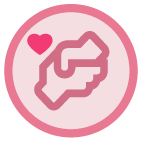
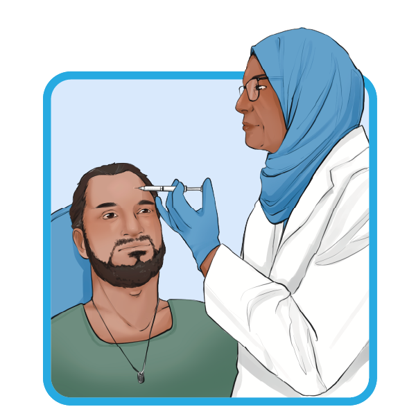
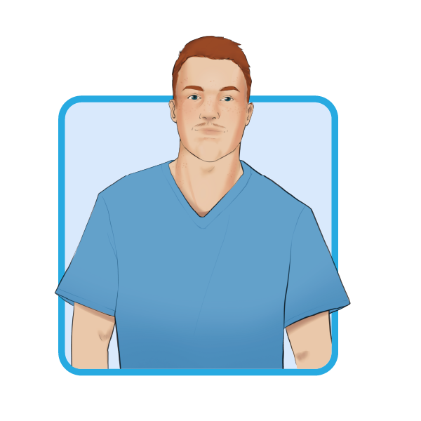
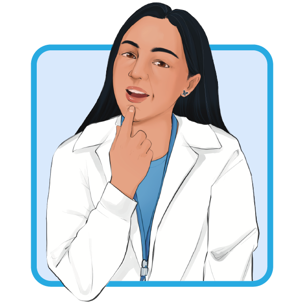
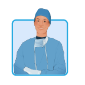

Intro
This page acts as a hub for different ways that we can treat facial paralysis. The decision on what best suits your case is up to your care team. They experts and will work to find the best fit for you.
They will consider things like:

Care Point
This section will talk about non-surgical and surgical procedures in more detail. Please take a moment and reflect on if you feel comfortable going forward and remeber to take your time learning information at a pace that you're comfortable with.
Surgical treatment can either be static where they restore your resting facial symmetry, or dynamic where they work to give you back movement in your facial muscles.
Non-Surgical Options
Non-surgical treatments, as the name suggests, do not involve any surgical intervention. There are several non-surgical treatments available for facial paralysis, including:

Botox
Botox (botulinum toxin) is an injectable that can be used to treat facial paralysis patients with synkinesis. It works to relax the muscles and is injected into on your face, neck or inside your mouth. It can help:
- Improve resting symmetry
- Relieve tight muscles
- Improve control over facial muscles

Physiotherapy
Facial therapy can help you relearn how to move the muscles in your face after a facial paralysis diagnosis. A physiotherapist will work together with you to help improve facial movement and coordination. Physiotherapy can be extremely helpful under the guidance of a specialized facial therapist.

Speech Therapy
Speech therapy can help you regain control of your mouth muscles and a speech therapists can work with you to improve speech, strengthen facial muscles and retrain oral coordination.
Surgical Options: Static
Static Procedures
Static procedures are ones that help your face have more natural resting symmetry. This means when you are not moving your face, it will look more symmetrical to everyone around you.
Care Point
This section will talk about static surgical procedures in more detail. Please take a moment and reflect on if you feel comfortable going forward.

Eyelid surgery
With facial paralysis, you lose control of your upper eyelid making it difficult to blink or close your eye. This is dangerous as you lose the ability to protect it from getting scratched by things like dirt. During this procedure, a small and thin eyelid weight will be put under the skin of your upper eyelid that will help weight it down to close. The muscle to open your eye is a different nerve (not the facial nerve), so your ability to open your eye will be the same as before paralysis.
If you regain function or anything changes, the weight can be later removed or changed. You can safely go through a metal detector or MRI with the weight. Your doctor may tape trial weights to your eyelid during the clinic visit to test which weight works best for you before surgery.
Static Facial Suspension (Sling)
A band of fascia lata is taken from your body (generally from your wrist or leg) and used like a sling to hold up the corner of the mouth, upper lip, laugh line or base of the nostril.
Muscle Excision
Normally the facial muscles on both sides of your face work in coordination with each other, pulling equally. With facial paralysis, the muscles on the non-paralyzed side still work while those on the paralyzed side are no longer pulling your face. During a muscle excision procedure the surgeon will remove the muscle that has too much activity and has become too strong and tight. This will help reduce the imbalance and improve facial symmetry.
Brow Lift
During a brow lift procedure, the eyebrow is surgically moved up on your face in order to counteract the drooping that happens with facial paralysis.
Surgical Options: Dynamic
Dynamic Procedures
Dynamic procedures are ones that help you regain control of the movement in your facial muscles. Everyone will have different results and recovery takes time. Retraining your brain to connect with your muscles is not an easy task.
Care Point
This section will talk about dynamic surgical procedures in more detail. Please take a moment and reflect on if you feel comfortable going forward.
Selective Neurectomy
During a selective neurectomy procedure nerve branches that are causing synkinesis or causing some muscles to work too strongly will be removed.
Nerve Transfer
During a nerve transfer, a healthy nerve is rerouted to the damaged nerve close to the muscle you want to reanimate. A common approach is to use the nerve from the chewing muscle (the masseter muscle) and rewiring it to one of the facial nerve branches that controls smile. That procedure is called a masseter nerve transfer.
Nerve Graft
During a nerve graft, a healthy nerve is taken from elsewhere in your body (most commonly the sural nerve in your leg) and added into your face. Sometimes it is stitched to the healthy facial nerve (on the non-paralyzed side of your face) and then passed across to connect with the branches on the paralyzed side. This procedure is called a cross face nerve graft (CFNG).
Free Muscle Transfer
During a free muscle transfer, a healthy muscle is taken from somewhere in your body and placed into your face to help you regain movement. This is generally done after upwards of 2 years of facial paralysis with no sign of recovery. This muscle needs to be connected to blood vessels in order to stay healthy and to a nerve for movement.
It can be connected to the healthy facial nerve (on the non-paralyzed side of your face) using a cross face nerve graft (CFNG), or connected to a branch of the masseteric nerve (chewing nerve).
Getting your smile back
A common procedure to get you your smile back is a free muscle transfer. A healthy piece of muscle is placed into your face on the paralyzed side. Since it needs a nerve connection to move, there are two main solution:
- A cross face nerve graft: this procedure has a higher chance of letting you smile spontaneously (for example: when you hear a funny joke) but has a higher chance of not working since the nerve has to travel a long distance (across the face).
- A masseteric nerve connection: this procedure is more reliable since the nerve is on the same side as the new muscle, but it will not let you smile spontanously. You will most likely have to think about chewing or bite down in order to smile. Some people have regained their spontanous smile with the masseteric nerve connection but it is not as common and takes patience & work.
{kind=link}